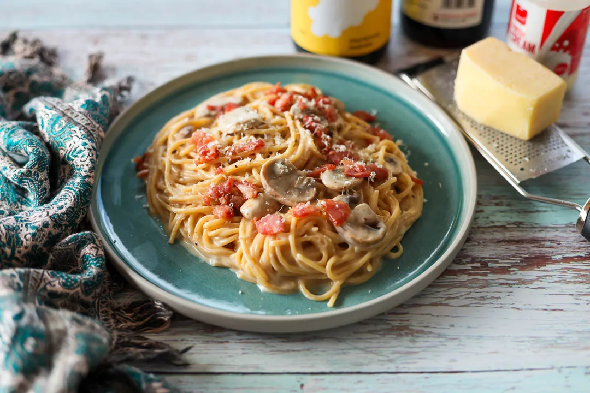

Classic Filipino Carbonara
Filipino Carbonara is more of a pasta Alfredo with bacon. It is richer and creamier than the traditional version. This is attributed to the use of heavy cream.

Ingredients
- 3/4 lb. spaghetti
- 1 piece Knorr beef cube
- 7 strips bacon
- 15 ounces all-purpose cream
- 6 tablespoons grated Parmesan cheese
- 1 piece yellow onion chopped
- 2 cloves garlic minced
- 1/8 teaspoon ground nutmeg
- 1 teaspoon salt
- 2 quarts water
Method
- Cook the bacon until crispy. Do this by placing each strip in a pan. Cook in medium heat for 2 minutes. Flip the bacon and cook the opposite side for another 2 minutes. Continue performing the same steps until each piece gets crispy. Set aside. Save the bacon grease.
- Cook the spaghetti by pouring water in a cooking pot. Let boil. Add salt and put the spaghetti into the pot. Cook for 12 minutes or until al dente. Remove the spaghetti Set aside. Save ¼ cup of water used to cook spaghetti.
- Prepare the carbonara sauce by heating 3 tablespoons of bacon grease. Saute onion and garlic.
One the onion softens, pour all-purpose cream into the pan. Stir. Add ¼ cup water.
- Knorr Beef Cube. Stir until well blended.
- Put chopped bacon and nutmeg into the sauce. Stir.
- Add the cooked spaghetti. Toss until spaghetti gets totally coated with sauce.
- Add Parmesan cheese. Toss. Add more bacon.
- Transfer to a serving plate. Serve and enjoy!